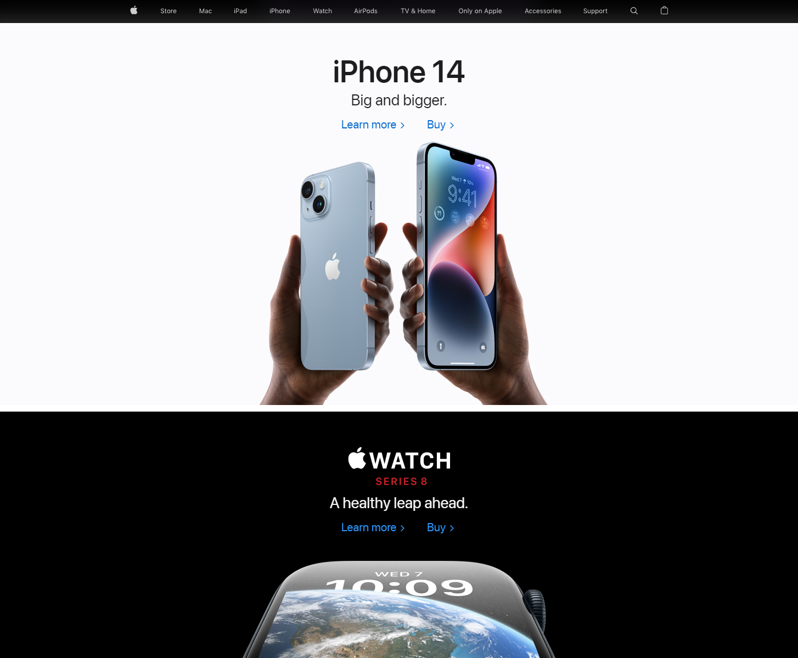
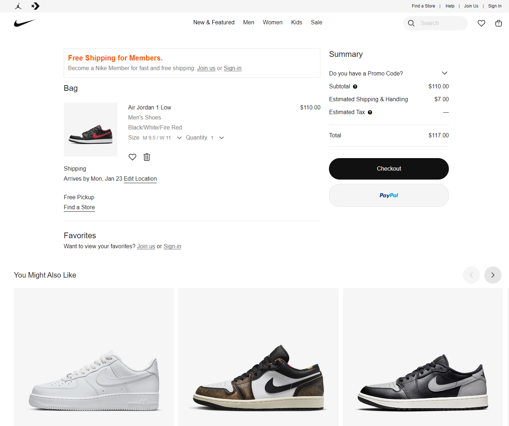

Apple
Apple.com In the image provided Apple masterfully uses white space to call attention to two phones in the middle. The phones are the star of the show and Apple makes sure that the eye is drawn to them by using the contrast of the phones on the white background.
Nike
Nike.com For Nike on the product page the goal is to get customers to purchase a product. From the cart page the checkout button is large and greatly contrasts the rest of the page. It is very easy to see and the distance to the checkout button is short. From the center of the page, where your eye is drawn to the product and then it is a short mouse move to the checkout button.
Drudgereport
Drudgereport.comDrudgereport has a heirarchical structure in which the top story will be in bold and in a much larger font. As these stories get older they will move down the page. Someone reading the page will instantly know the biggest story of the moment. If it is a really big story he will place a siren above the headline to call attention to it. Drudge also uses good contrast and use of white space.